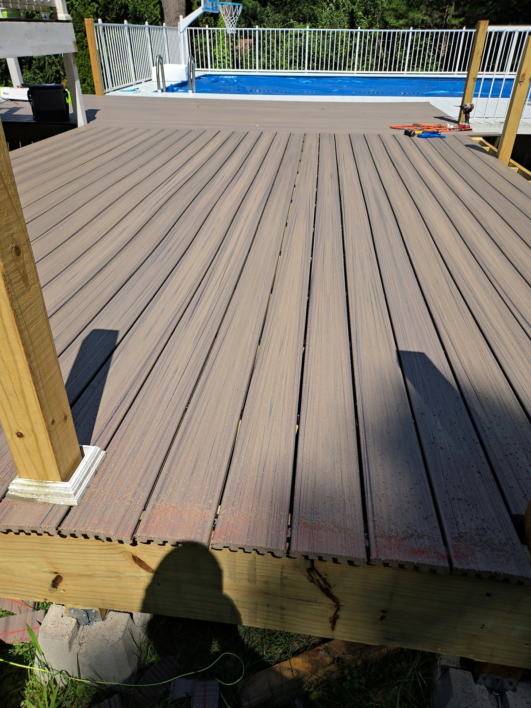
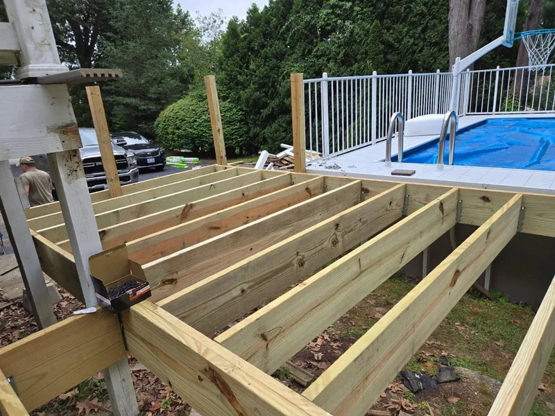
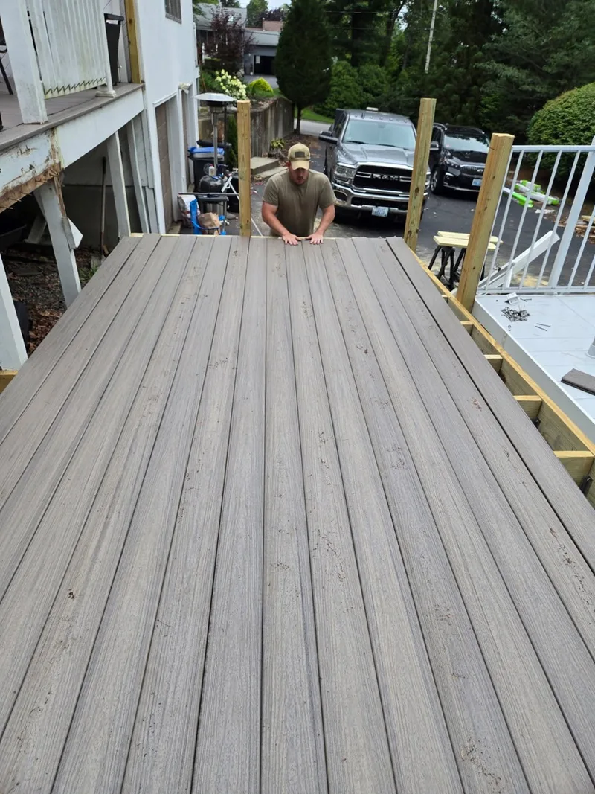
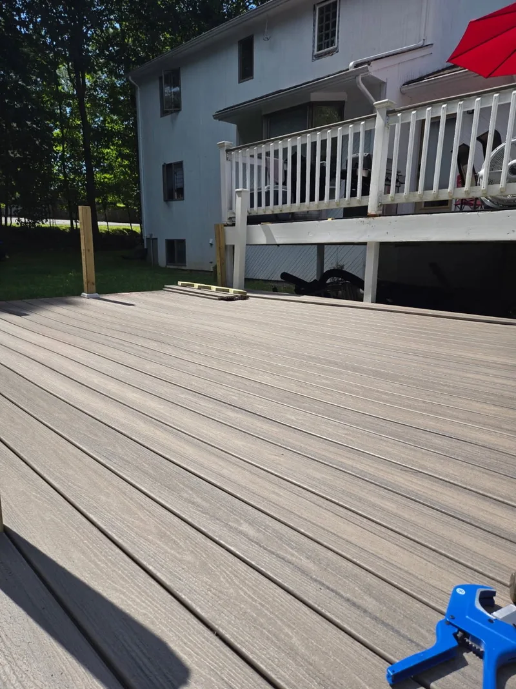

The frame comes first
Composite and wood boards both sit on a wood frame. New boards over weak joists do not make a safe deck. The framing, posts, and the connection to the house get checked before a surface is priced.
Decks
Framing fixes, deck boards, stairs, railings, and small rebuilds for Rhode Island yards, pools, and back doors.

We look at the framing first, then price the work that actually needs to happen. Sometimes that is a board replacement. Sometimes it is a safer rebuild.
Choosing deck boards
The frame under almost every deck is pressure-treated lumber. The choice you see and walk on is the surface, and each option trades upfront cost against upkeep.
| What to compare | Pressure-treated | Cedar | Composite |
|---|---|---|---|
| Upfront cost | Lowest. | Middle. | Highest. |
| Upkeep | Regular cleaning and sealing or staining. | Sealing to hold its color. Left alone, it weathers to gray. | Washing. No staining or sealing. |
| Look and feel | Real wood that can crack and splinter as it ages. | Real wood with a finer grain. Softer, so it dents more easily. | Even color and texture from board to board. |
| Sun | Stays cooler underfoot. | Stays cooler underfoot. | Dark colors can get hot in direct sun. |
Composite and wood boards both sit on a wood frame. New boards over weak joists do not make a safe deck. The framing, posts, and the connection to the house get checked before a surface is priced.
Rot starts where water sits: along the board fastened to the house, at post bases, on stair stringers, and at the ends of joists. Point out bounce, loose railings, and rusted hardware at the estimate.
Salt air is hard on fasteners and brackets. Decks close to the bay or the ocean do better with stainless steel or hot-dip galvanized hardware rated for that exposure.
A new deck or a structural rebuild usually needs a building permit from your city or town. Replacing surface boards or making small repairs may not. Your local building office can confirm what applies to your project.
Real deck work
These Cook Flooring projects show the work that determines whether a deck feels solid: new framing, careful board placement, and finished composite surfaces.



A useful estimate begins with the framing, not an assumption that every old deck needs a full replacement.
Yes. Deck joist repair, rot repair, and framing fixes are part of our Rhode Island deck work. We inspect the existing framing and explain whether the project needs a targeted repair, new surface boards, or a rebuild in the written estimate.
Often, yes. We inspect the framing, posts, stairs, railings, and surface boards first, then explain which parts are sound and which parts need repair or replacement.
Yes. We work with pressure-treated lumber, cedar, and composite deck boards, including framing repairs, surface replacement, stairs, and railings.
Composite costs more up front and needs only washing, with no staining or sealing. Pressure-treated wood costs less to build and needs regular cleaning and sealing to hold up. Both sit on a wood frame, so the condition of the framing matters either way.
A new deck or a structural rebuild usually needs a building permit from your city or town. Replacing surface boards or making small repairs may not. Check with your local building office before work starts.
Look for soft or dark wood where water sits: along the board fastened to the house, at post bases, and at the ends of joists. Bounce, loose railings, and rusted hardware are also warning signs. We inspect the framing first and explain which parts are sound in the written estimate.